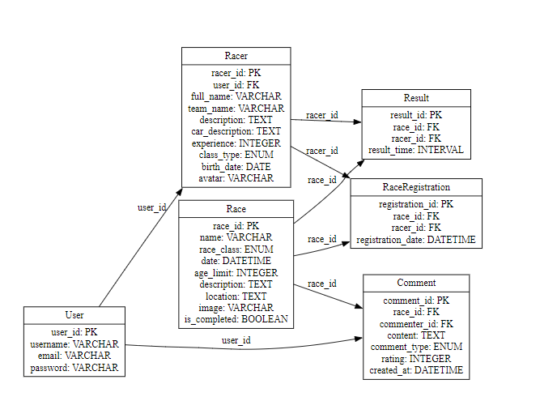

Отчет по лабораторной работе
Цель работы
Разработать веб-приложение на основе Django, реализующее функциональность для управления данными о гонках и комментариями пользователей.
Задачи
- Разработать модель данных для хранения информации о гонках, гонщиках и комментариях.
- Реализовать функционал добавления, редактирования и удаления данных.
- Улучшить внешний вид проекта с помощью CSS и кастомной верстки.
Ход работы
1. Реализация моделей
Составлена следующая модель базы данных, которая реализована в models.py

2. Реализация функционала
Admin – зарегистрировали модели для отображения в админке
Views – отвечает за функционал работы пользователя с сайтом
- Регистрация: def register(request): - пользователю предлагается задать логин, пароль и всю информацию о себе как о гонщике
- Login/logout: Тут все стандартно
- Профиль: def user_profile(request): - собираем информацию (данные гонщика, предстоящие и прошедшие гонки) и рендерим страницу
- Редактирование профиля: def edit_profile(request): - предоставляем пользователю возможность изменить указанные данные
- Посещение профиля другого гонщика: def other_profile(request, racer_id): - рендерим страницу с данными другого гонщика
- Регистрация на гонку: def register_for_race(request, race_id): - корректно регистрируем пользователя на гонку учитывая потенциальные некорректные действия пользователя (повторная регистрация, регистрация на гонку не своего класса и тд)
- Отмена регистрации на гонку: def cancel_register_for_race(request, race_id): - корректно удаляем регистрацию гонщика на гонку
- Список гонок: def race_list(request, race_type): - сборка гонок (предстоящих, прошедших) и пагинация
- Детали гонки: def race_detail(request, race_id): - сборка данных гонки, комментариев, результатов для завершившихся гонок
- Добавление комментов: def add_comment(request, race_id): - даем возможность корректно внести комментарий каждого типа
urls - добавили все пути для отображения страниц, добавления комментариев, логина/логаута и тп
Очевидно внесены необходимые изменения в settings.py и реализованы все необходимые html-файлы, но в такие подробности вдаваться не будем
3. Внешний вид
Реализованы success и error сообщения, чтобы пользователь получал обратную связь на свои действия. Были добавлены стили и тем самым улучшен внешний вид страниц и объектов на них. Обойдемся без подробностей стилей и скриншотов, потому что лучше просто запустить сервис на локальном хосте и лицезреть все самому, в качестве превью покажем как отображается список гонок на странице:

Заключение
Сервис функционально полностью готов, не хватает только наполнения реальными данными.